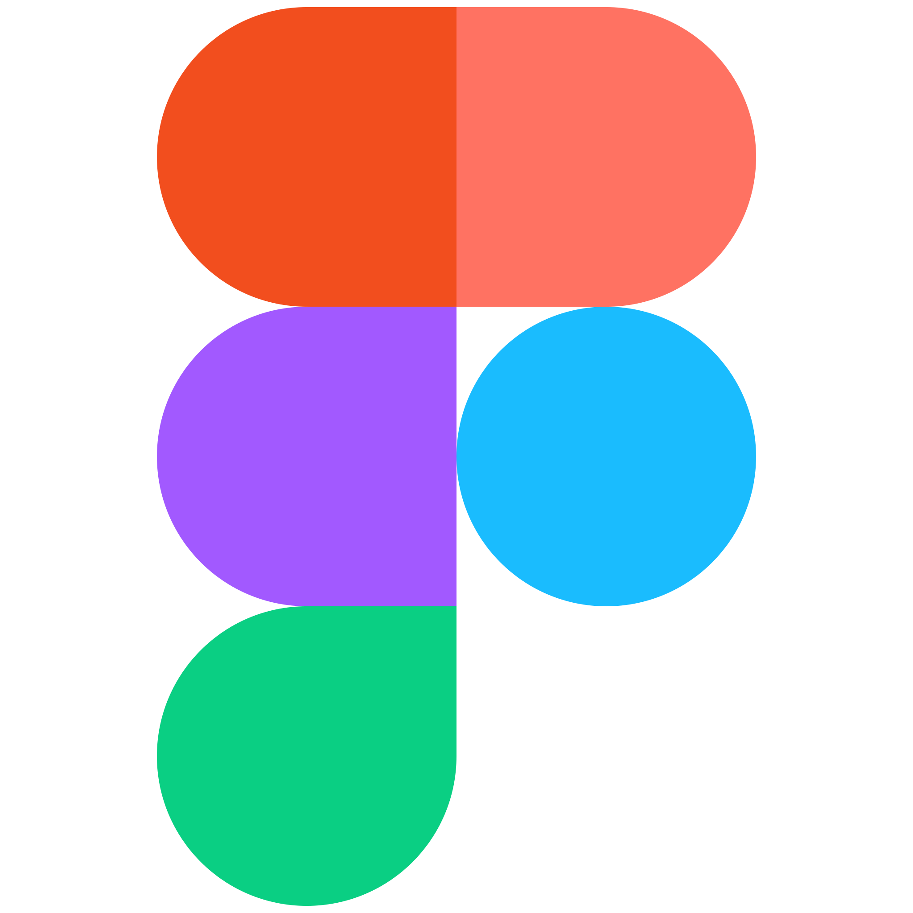

Hi, my name is
Erwan Michaud--Winkler.
I am a 19 years old student in the
IUT of Velizy
and I study web development and graphic design.
 Go to About
Go to About
School education :
- BUT MMI (2022-2023)
in Velizy-Villacoublay
- BUT in computer science
(2021-2022) in Velizy
- Technological baccalaureate
at Lycée Charles de Gaulle
in the town of Poissy

Vous devez expliquer ce que vous apprenez,
comment les sujets sont liés et pertinents
et quelles tâches vous pouvez accomplir
In BUT MMI, I learn :
- Graphc design
- Web development (HTML, CSS and JS)
- Ergonomics and accessibility of websites
- Hosting of internet pages
The BUT is a diploma prepared in 3 years in IUT
(University Institute of Technology). It is
for university baccalaureate of technology.
There are 24 possible specialities as education.
The MMI program stands for multimedia and internet professions.
It allows students to train in the fields of design, audiovisual
and digital project management.
It offers different courses from the second year onwards such as
communication, web development and digital creation.
Mettre la vidéo
Projet 1 : Proies/prédateurs (python) (avec une image ?)
Projet 2 : APLI (mettre lien github) (avec une image ?)

CSS

HTML

JavaScript

Photoshop

After Effects
Figma

Git

Premiere Pro
Job 1 : Front-end web developer
What does he do ? : He participates in the creation of
the user interface of a site or a web application. He intervenes
on all the elements appearing on the screen and managed by the
user's web browser. There is therefore a design/ergonomics part
and a development part in his mission. He contributes largely to
the user having a fluid and pleasant navigation via an ergonomic
interface for which he is responsible for the development.
Who works with him ? : Back-end developers,
ux/ui designers and project managers.
What is he responsible for ? : Transcribe the
received mock-ups into a computer code, be responsible for the
compatibility of the interfaces with the different browsers and
their responsiveness, optimize his/her code and make it lighter
and carry out a permanent technological watch.
Job 2: UX/UI-designer
What does he do ? : He does user experience/interface
design. The UX aims to create emotion in the user via a narrative
in a user experience. It must make the site accessible,
create confidence, make the site easy to handle and find.
As for the UI, it takes care of the link between the machine
and the man, it organizes the graphic and textual elements
on the basis of technical standards.
Who works with him ? : There are front and back-end developers
or fullstack, web project managers, digital communication managers,
graphic designers and everything that revolves around data.
What is he responsible for ? : He is above all in charge
of making mock-ups and models, necessary for the final realization
of the graphic optimizations by the developers.
Job 3 : Photographer
What does he do ? : Consists in taking good photographs of a subject.
His main objective is to capture the subject of his photos as well as
possible. It requires creativity, a certain eye in order to realize the
best possible possible and a rather big patience as quality.
Who works with him ? : Technical operators, cameramen, electricians,
stagehands, studio managers, an image retoucher...
What is he responsible for ? : The technical and artistic quality
of the images in a documentary, film or video clip. They pay particular
attention to color, light and framing. Consists in taking good photographs
according to the place, the time, the targets and the effects sought.
Experience professionnelle de la zone 3 du CV